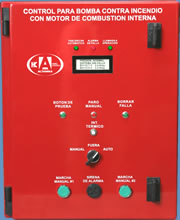

• Cumple la mayoría de requerimientos de la norma NFPA 20 (National Fire Protection Association).
• Para motores de combustión interna de gasolina o diesel.
• Arranque y paro automático cambiar la presión en la red, lo cual es detectado por el interruptor de presión.
• 6 intentos de arranque de 10 seg con 10 seg de descanso entre cada uno de los intentos.
• Corte de carga al arranque.
• Retardo de paro ajustable de 0 a 6 min.
Tablero totalmente ensamblado, incluye:
• 2 cargadores de batería automáticos.
• Cuenta con voltímetro y amperímetro digitalpara cada batería.
• Alternador de baterías•Detector para anular el alternado. (Si una batería esta baja).
• Alarma auditiva.
• Contacto remoto de alarma.
• Gabinete a prueba de polvo y agua, se surte en color rojo.
• Selector de paro manual-automático.
• Selector 3 posiciones. (Manual - Fuera - Automático).
• Pilotos (Tablero automático llamada a operación y falla).
|
Botones:
•Botones para marcha manual de batería #1 y #2.
•Botón de prueba.
•Botón para borrar memoria de fallas.
•Botón de paro manual.
Protegido contra:
•Polaridad invertida.
•Protector de sobrecarga de control.
•Baja presión de aceite.
•Alta temperatura del agua.
•Falla de arranque.
•Sobre-velocidad.
•Contra descargas en la entrada de 127V a los cargadores.
Control con pantalla LCD
•Memoria de fallas
•Indicación de:
-Tablero en automático.
-Llamada a operación.
-Motor operando.
-Retardo de paro.
-Falla de C.A. en el cargador.
-Falla de arranque.
-Falla de baja presión de aceite.
-Falla de alta temperatura en el agua.
-Falla de sobre-velocidad.
-Voltajes de baterías.
-Alarma de baterías bajas.
-Amperes de carga de baterías.
|

|